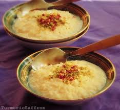

Mandi ingredients list

- Chicken
- Yogurt
- Saffron
- Oil
- Bay leaves
- Vinegar
- Salt
- Cardamom
- Black papper
- Cloves of garlic
- cinnamon
- Rice
- Onions
- Tomatoes and lemons
Step by step cooking instruction
- Mix all chicken and keep it on the fridge for 4 huors
- Heat oil and ghee and steir cardamom, all spices and ingredients
- Add 3 cups water in a pot
- Place the cicken top of the rice pot and cover the chicken with foil sheet
- Cook in the oven for 20 minutes
- Leave the chicken without the foil for 20 more minutes
- And serve with dagoos tomato sauce